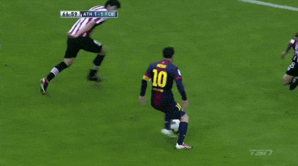

Me considero un aficionado del futbol, normalmente estoy al tanto de varias competencias al rededor del mundo incluyendo la mexicana, la brasileña, la champions league europea, la premier inglesa, la serie A italiana y laliga española. Los fines de semana normalmente hay partidos de liga y entre semana normalmente juegan los partidos de la champions. Tambien me gusta dominar el balon en el jardin de mi casa durante la pandemia y entrenar o hechar una cascara en tiempos normales.
Una de mis pasiones es tocar guitarra. Trato e practicar todos los dias, especialmente cuando no tengo tarea por hacer. Durante los fines de semana normalmente tengo el tiempo para aprenderme una nueva canción. Horita estoy aprendiendome la canción de "Stairway to Heaven" de Led Zeppelin. A veces hasta toco en la tarde para arrucarme antes de tomar una siesta.
Es una metodologia empezada por Google enfocada en hacer que los elementos de los sitios web se comporten como si fueran objetos reales. El Material Design tiene un enfoque en la luz y el movimiento de los elementos de una pagina. Una consecuencia es de que ciertos elementos tengan sombras sinteticas. Tambien hay un enfoque en el uso de color intencional en los elementos de la pagina web.